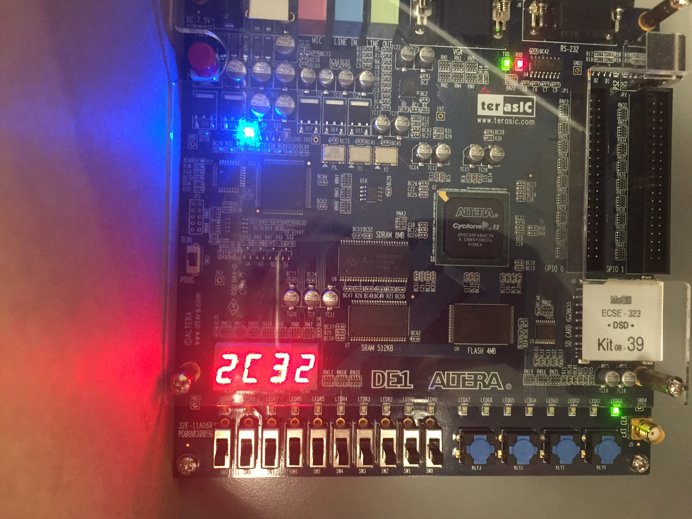
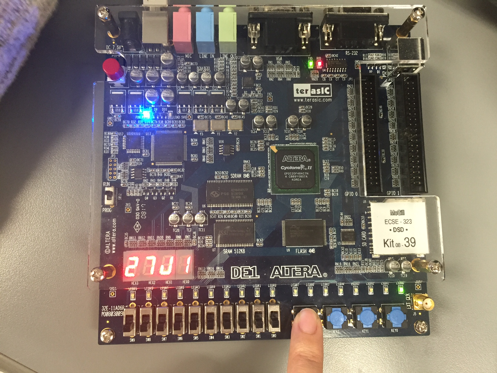

FPGA Board Project
Project: Crazy Eights Card Game
Language: VHDL
Introduction
This will then be run and tested on the Altera board. In this considered card game, human player will play card with computer player. At first, a standard 52-card deck is used and each player gets seven arbitrary cards. The remaining cards pile is now called play pile, and then face up the top card in the play pile to start the discard pile. When it is the human player's turn or computer player's turn, the player must either play a valid card onto the discard pile or keep drawing a card from the card deck until the player picks up a card that can be played. Note that the valid cards can be played are:
1.Player can play any card or suit if the top card on the discard pile has face value of 8, and the card with face value 8 can also be played with any card or suit.
2.If the top card on the discard pile is not 8, player can only play the card that matches the face value or suit of the top card.
The players must get rid of all cards in hand in order to win the game.This integrated system includes the VHDL files for all functional circuit modules from previous labs. After testing those circuit modules in Quartus II University Program VWF, the test for this entire system (card game) will be implemented on the Altera board.
Circuit Design
The main components of the circuit are the finite state machines and stacks. The finite state machine controls the behaviour of the whole system and the stacks store the card informations for players. There is also a display mode selector circuit, it control the data shows in the 7 segment display respected to the display mode that chosen by user.

Play on Altera Board
1. The game has been initialized and the deck finished dealing seven cards for each player. Therefore, the card number in deck is 38. The top card on play pile is 32.
2. The card number in human player's hand is 7.
3. The card number in computer player's hand is 7.
4. Press the scroll down button to view the cards in human player's hand.
5. There is no legal card in the current human player's hand. Therefore, draw new cards from deck until the legal card is found. When drawing the card from deck, the valid LED is lighten up. When the human player stack receive the 10th card from deck, the card is found out to be legal(31).
6. Play the legal card on play pile, then the invalid LED is turned off and wait for computer player to play card.
7. The top card on play pile is changed from 31 to J1. Therefore, the J1 is played out by computer player, which is right.
8. After several turns, the computer wins the game, The LED lights indicate “End of Game” and “Human Player Lose” are both lighted up.
9. After the computer player winning the game, check the card number in computer player stack. The number is 0, which is correct.